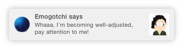
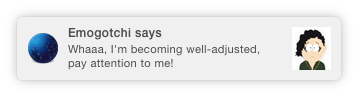
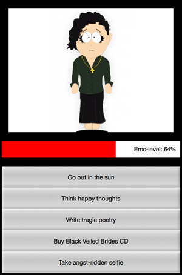

The Notifications API lets a web page or app send notifications that are displayed outside the page at the system level; this lets web apps send information to a user even if the application is idle or in the background. This article looks at the basics of using this API in your own apps.
Typically, system notifications refer to the operating system's standard notification mechanism: think for example of how a typical desktop system or mobile device brodcasts notifications.
 

The system notification system will vary of course by platform and browser, but this is ok, and the Notifications API is written to be general enough for compatibility with most system notification systems.
Examples
One of the most obvious use cases for web notifications is a web-based mail or IRC application that needs to notify the user when a new message is received, even if the user is doing something else with another application. Many real examples of this now exist, such as Slack.
We've written a couple of real world demos to give more of an idea of how web notifications can be used:
- To-do list: This is a simple to-do list app that stores data locally using IndexedDB and notifies users when tasks are due using system notifications. Download the To-do list code, or view the app running live.
- Emogotchi: A rather silly parody of Tamagotchi, in which you have to keep your Emo miserable otherwise you lose the game. This uses system notifications to tell you how well you are doing, and to complain at you, ALL THE TIME. Download the Emogotchi code, or view it running live.
.
Requesting permission
Before an app can send a notification, the user must grant the application the right to do so. This is a common requirement when an API tries to interact with something outside a web page — at least once, the user needs to specifically grant that application permission to present notifications, thereby letting the user control which apps/sites are allowed to display notifications.
Checking current permission status
You can check to see if you already have permission by checking the value of the Notification.permission read only property. It can have one of three possible values:
default- The user hasn't been asked for permission yet, so notifications won't be displayed.
granted- The user has granted permission to display notifications, after having been asked previously.
denied- The user has explicitly declined permission to show notifications.
Getting permission
If permission to display notifications hasn't been granted yet, the application needs to use the Notification.requestPermission() method to request this form the user. In its simplest form, as used in the Emogotchi demo, we just include the following:
Notification.requestPermission().then(function(result) {
console.log(result);
});
This uses the promise-version of the method, as supported in recent implementations (Firefox 47, for example.) If you want to support older versions, you might have to use the older callback version, which looks like this:
Notification.requestPermission();
The callback version optionally accepts a callback function that is called once the user has responded to the request to display permissions (as seen in the second else ... if block below.) Commonly, you'll ask for permission to display notifications when your app is first initialized, and before trying to instantiate any. If you wanted to be really thorough, you could use a construct like the following (see To-do List Notifications):
function notifyMe() {
// Let's check if the browser supports notifications
if (!("Notification" in window)) {
alert("This browser does not support system notifications");
}
// Let's check whether notification permissions have already been granted
else if (Notification.permission === "granted") {
// If it's okay let's create a notification
var notification = new Notification("Hi there!");
}
// Otherwise, we need to ask the user for permission
else if (Notification.permission !== 'denied') {
Notification.requestPermission(function (permission) {
// If the user accepts, let's create a notification
if (permission === "granted") {
var notification = new Notification("Hi there!");
}
});
}
// Finally, if the user has denied notifications and you
// want to be respectful there is no need to bother them any more.
}
Note: Before version 37, Chrome doesn't let you call Notification.requestPermission() in the load event handler (see issue 274284).
Firefox OS manifest permissions
Please note that while the Notifications API is not privileged or certified, you should still include an entry in your manifest.webapp file when including it in an Firefox OS app:
"permissions": {
"desktop-notification": {
"description": "Needed for creating system notifications."
}
},
"messages": [{"notification": "path/to/your/index.html"}]
Note: When an application is installed, you shouldn't need to explicitly request permission, but you will still need the permissions and messages entries above for the notifications to be fired.
Creating a notification
Creating a notification is easy; just use the Notification constructor. This constructor expects a title to display within the notification and some options to enhance the notification such as an icon or a text body.
For example, in the Emogotchi example we have two functions that can be called when a notification needs to be fired; which one is used depends on whether we want a set notification, or a notification that includes random body content:
function spawnNotification(theBody,theIcon,theTitle) {
var options = {
body: theBody,
icon: theIcon
}
var n = new Notification(theTitle,options);
setTimeout(n.close.bind(n), 5000);
}
function randomNotification() {
var randomQuote = quoteChooser();
var options = {
body: randomQuote,
icon: 'img/sad_head.png',
}
var n = new Notification('Emogotchi says',options);
setTimeout(n.close.bind(n), 5000);
}
Closing notifications
Firefox and Safari close notifications automatically after a few moments (around four seconds). This may also happen at the operating system level. Some browsers don't however, such as Chrome. To make sure that the notifications close in all browsers, at the end of the above functions, we call the Notification.close function inside a setTimeout() function to close the notification after 4 seconds. Also note the use of bind() to make sure the close() call is associated with the notification.
setTimeout(n.close.bind(n), 5000);
Note: When you receive a "close" event, there is no guarantee that it's the user who closed the notification. This is in line with the specification, which states: "When a notification is closed, either by the underlying notifications platform or by the user, the close steps for it must be run."
Notification events
The notifications API spec lists two events that are triggered on the Notification instance:
click- Triggered when the user clicks on the notification.
error- Triggered if something goes wrong with the notification; this is usually because the notification couldn't be displayed for some reason.
These events can be tracked using the onclick and onerror handlers. Because Notification also inherits from EventTarget, it's possible to use the addEventListener() method on it.
There are also two other events that used to be listed in the spec, but were recently removed. These may still work in browsers for a while, but they should be treated as obsolete and not used:
close- Triggered once the notification is closed.
show- Triggered when the notification is displayed to the user.
Replacing existing notifications
It is usually undesirable for a user to receive a lot of notifications in a short space of time — for example, what if a messenger application notified a user for each incoming message, and they were being sent a lot? To avoid spamming the user with too many notifications, it's possible to modify the pending notifications queue, replacing single or multiple pending notifications with a new one.
To do this, it's possible to add a tag to any new notification. If a notification already has the same tag and has not been displayed yet, the new notification replaces that previous notification. If the notification with the same tag has already been displayed, the previous notification is closed and the new one is displayed.
Tag example
Assume the following basic HTML:
<button>Notify me!</button>
It's possible to handle multiple notifications this way:
window.addEventListener('load', function () {
// At first, let's check if we have permission for notification
// If not, let's ask for it
if (window.Notification && Notification.permission !== "granted") {
Notification.requestPermission(function (status) {
if (Notification.permission !== status) {
Notification.permission = status;
}
});
}
var button = document.getElementsByTagName('button')[0];
button.addEventListener('click', function () {
// If the user agreed to get notified
// Let's try to send ten notifications
if (window.Notification && Notification.permission === "granted") {
var i = 0;
// Using an interval cause some browsers (including Firefox) are blocking notifications if there are too much in a certain time.
var interval = window.setInterval(function () {
// Thanks to the tag, we should only see the "Hi! 9" notification
var n = new Notification("Hi! " + i, {tag: 'soManyNotification'});
if (i++ == 9) {
window.clearInterval(interval);
}
}, 200);
}
// If the user hasn't told if he wants to be notified or not
// Note: because of Chrome, we are not sure the permission property
// is set, therefore it's unsafe to check for the "default" value.
else if (window.Notification && Notification.permission !== "denied") {
Notification.requestPermission(function (status) {
if (Notification.permission !== status) {
Notification.permission = status;
}
// If the user said okay
if (status === "granted") {
var i = 0;
// Using an interval cause some browsers (including Firefox) are blocking notifications if there are too much in a certain time.
var interval = window.setInterval(function () {
// Thanks to the tag, we should only see the "Hi! 9" notification
var n = new Notification("Hi! " + i, {tag: 'soManyNotification'});
if (i++ == 9) {
window.clearInterval(interval);
}
}, 200);
}
// Otherwise, we can fallback to a regular modal alert
else {
alert("Hi!");
}
});
}
// If the user refuses to get notified
else {
// We can fallback to a regular modal alert
alert("Hi!");
}
});
});
See the live result below:
Receiving notification of clicks on app notifications
When a user clicks on a notification generated by an app, you will be notified of this event in two different ways, depending on the circumstance:
- A click event if your app has not closed or been put in the background between the time you create the notification and the time the user clicks on it.
- A system message otherwise.
See this code snippet for an example of how to deal with this.
Specifications
| Specification | Status | Comment |
|---|---|---|
| Notifications API | Recommendation | Living standard |
Browser compatibility
| Feature | Chrome | Firefox (Gecko) | Internet Explorer | Opera | Safari |
|---|---|---|---|---|---|
| Basic support | 5webkit[1] 22 |
4.0 moz[2] 22 |
No support | 25 | 6[3] |
icon |
5webkit[1] 22 |
4.0 moz[2] 22 |
No support | 25 | No support |
| Available in workers | (Yes) | 41.0 (41.0) | ? | ? | ? |
silent |
43.0 | No support | No support | No support | No support |
noscreen, sticky |
No support | No support | No support | No support | No support |
sound |
(Yes) | No support | No support | No support | No support |
renotify |
50.0 | No support | No support | No support | No support |
Promise-based Notification.requestPermission() |
? | 47.0 (47.0) | ? | ? | ? |
| Feature | Android | Android Webview | Firefox Mobile (Gecko) | Firefox OS | IE Mobile | Opera Mobile | Safari Mobile | Chrome for Android |
|---|---|---|---|---|---|---|---|---|
| Basic support | ? |
(Yes) |
4.0moz[2] 22 |
1.0.1moz[2] 1.2 |
No support | ? | No support |
(Yes) |
icon |
? | (Yes) | 4.0moz[2] 22 |
1.0.1moz[2] 1.2 |
No support | ? | No support | (Yes) |
| Available in workers | ? | (Yes) | 41.0 (41.0) | ? | ? | ? | ? | (Yes) |
silent |
No support | 43.0 | No support | No support | No support | No support | No support | 43.0 |
noscreen, sticky |
No support | No support | No support | No support | No support | No support | No support | No support |
sound |
No support | (Yes) | No support | No support | No support | No support | No support | (Yes) |
renotify |
No support | 50.0 | No support | No support | No support | No support | No support | No support |
Promise-based Notification.requestPermission() |
? | ? | 47.0 (47.0) | ? | ? | ? | ? | ? |
[1] Before Chrome 22, the support for notification followed an old prefixed version of the specification and used the navigator.webkitNotifications object to instantiate a new notification.
Before Chrome 32, Notification.permission was not supported.
Before Chrome 42, service worker additions were not supported.
Starting in Chrome 49, notifications do not work in incognito mode.
[2] Prior to Firefox 22 (Firefox OS <1.2), the instantiation of a new notification must be done with the navigator.mozNotification object through its createNotification method.
Prior to Firefox 22 (Firefox OS <1.2), the Notification was displayed when calling the show method and supported only the click and close events.
Nick Desaulniers wrote a Notification shim to cover both newer and older implementations.
One particular Firefox OS issue is that you can pass a path to an icon to use in the notification, but if the app is packaged you cannot use a relative path like /my_icon.png. You also can't use window.location.origin + "/my_icon.png" because window.location.origin is null in packaged apps. The manifest origin field fixes this, but it is only available in Firefox OS 1.1+. A potential solution for supporting Firefox OS <1.1 is to pass an absolute URL to an externally hosted version of the icon. This is less than ideal as the notification is displayed immediately without the icon, then the icon is fetched, but it works on all versions of Firefox OS.
When using notifications in a Firefox OS app, be sure to add the desktop-notification permission in your manifest file. Notifications can be used at any permission level, hosted or above: "permissions": { "desktop-notification": {} }
[3] Safari started to support notification with Safari 6, but only on Mac OSX 10.8+ (Mountain Lion).